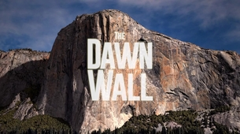

SILGA Rodrigue
Entrepreneur, webdeveloper Motivateur Harcord learner

Mes compétences
Pôle dépollution sites et sols pollués
Réalisation d’opération de terrassement sélectif en milieu pollués
Réalisation de sondage de sol et prélèvement sur site ( wacker, pelle mécanique)
Rédaction de documents types noté d’exécution, rapport d’ouvrage exécuté
Réalisation de plans, schéma, projection en 3D pour illustrer les modes opératoires, mémoires techniques.
Conception de plan de terrassement
Réalisation des métrés (cubatures) selon les plans fournis par le DCE
Pôle désamiantage
Réalisation de plans, schéma, projection en 3D pour illustrer les modes opératoires, les plans de retrait, mémoires techniques, processus.
Réalisation des plannings type gant dans le cadre des réponses aux appels d’offres et/ou exécution.
Constitution et garnissage de la bibliothèque de conception 3D.
Analyse de DCE dont CCTP, RC, CCAP, rapport de repérage amiante.
Rédaction de mémoire techniques selon CCTP, RC, en répondant à tous les critères et en mettant en avant les atouts de l’entreprise.
Réalisation des métrés selon les plans fournis par le DCE
Mon expérience
De Septembre 2017 à aujourd'hui
:Projeteur métreur - Technicien environnement chez Groupe VALGO - Réhabilitation de sites pollués
Novembre 2016 à Septembre 2017
:Alternance en cabinet d'architecture/ ART'INFO
Juillet 2015 à Septembre 2015
:Stage Aide conducteur de travaux/SOL CONFORT ET DECOR
Avril 2014 à Mai 2014
:Stage /AGEIM Ingénieurs conseils
Ma formation
De 2011 à 2012
: Baccalauréat série D
De 2012 à 2014
: DUT Génie Civil
De 2014 à 2015
: Licence Génie Civil
De 2015 à 2016
: Master I Eau et Assainissement
De 2016 à 2017
: Licence pro Projeteur CAO/DAO
De 2017 à 2018
: Remise en question
De 2018 à aujourd'hui
: Hardcor learner Openclassroom
Retour au site WEB
{kind=link}